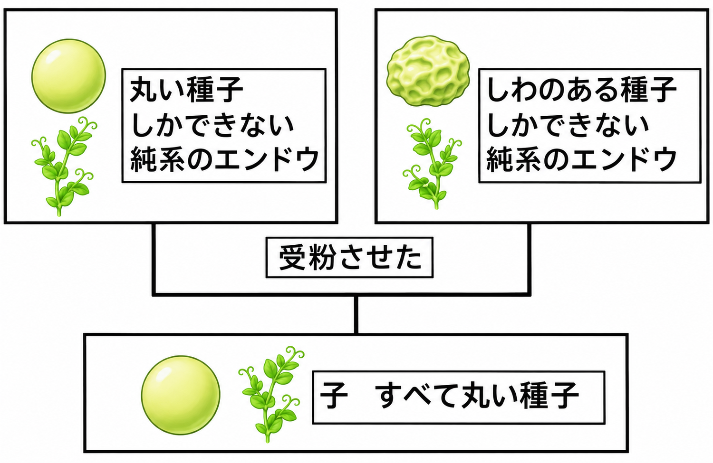
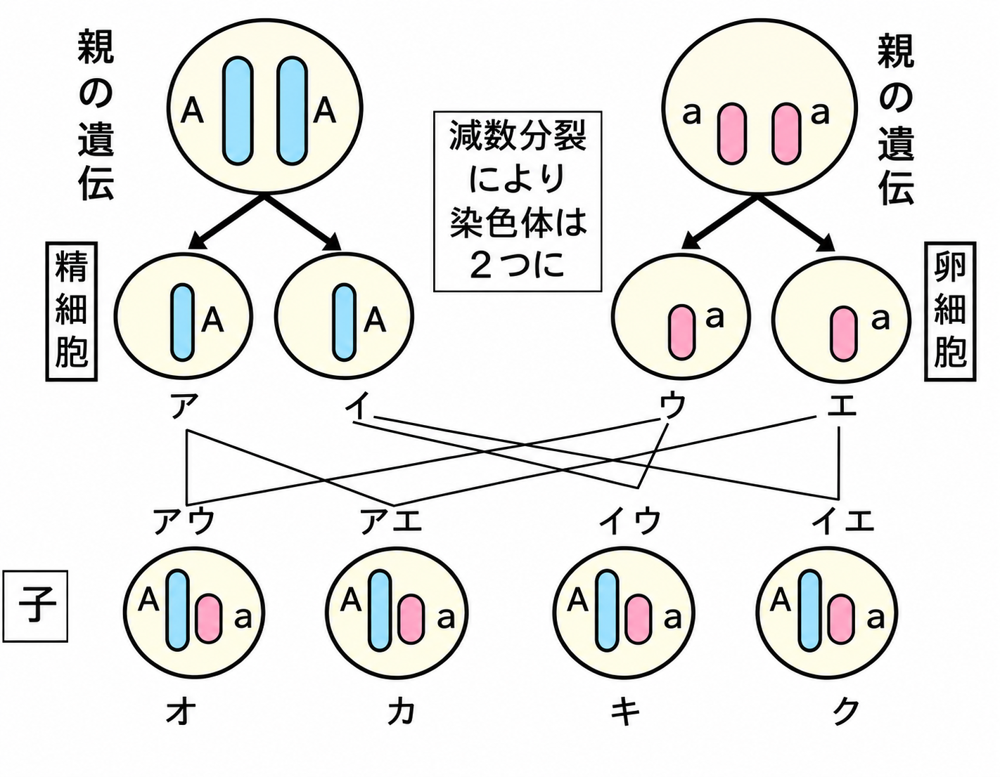
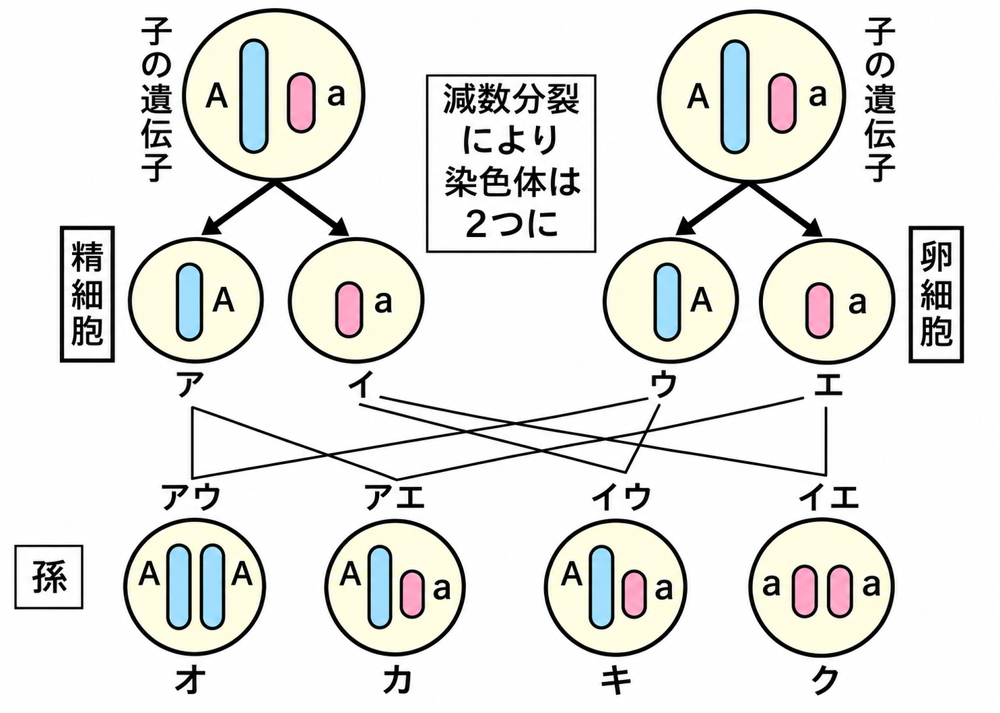

オーストリアの生物学者メンデルは、エンドウを使った実験から、遺伝の規則性（メンデルの法則）を見つけました。
「丸い種子しかできない純系のエンドウ」と「しわのある種子しかできない純系のエンドウ」を受粉させると、子はすべて丸い種子になりました。

代々丸い種子ができるエンドウの遺伝子をAA、代々しわのある種子のできるエンドウの遺伝子をaaとします。減数分裂により、AAの親からはAの生殖細胞（ア・イ）、aaの親からはaの生殖細胞（ウ・エ）ができます。これらが組み合わさって、4通りの受精卵（オ〜ク）ができます。

子の遺伝子型はすべてAaになります。AはaよりもA優性の遺伝子なので、子はAの形質である丸い種子になります。
| a（しわの親） | a（しわの親） | |
|---|---|---|
| A（丸の親） | Aa | Aa |
| A（丸の親） | Aa | Aa |
丸い種子：しわのある種子 ＝ 4：0（すべて丸い種子）です。このように、優性形質の純系の親と劣性形質の親から生まれた子がすべて優性形質になることを優性の法則といいます。
- AA（丸の純系）×aa（しわの純系）→子はすべてAa
- AはaよりA優性 → 子はすべて丸い種子
- 丸：しわ ＝ 4：0（優性の法則）
🏆 ベストタイム
つぎに、AA×aaでできた子（Aa）どうしを受粉させます。Aaの親は、減数分裂でAとaに分かれるので、Aの生殖細胞とaの生殖細胞が半分ずつできます。

4通りの組み合わせを表にすると、次のようになります。
| A | a | |
|---|---|---|
| A | AA | Aa |
| a | Aa | aa |
表より、遺伝子型の比は AA：Aa：aa ＝ 1：2：1 です。AAとAaは「丸」、aaは「しわ」になるので、丸：しわ ＝ 3：1 です。
子では現れなかった「しわ」の形質が、孫で再び現れます。これは、Aaの中にaがかくれていたからです。
- Aa×Aa → AA：Aa：aa ＝ 1：2：1
- 丸：しわ ＝ 3：1
- しわ（劣性形質）は、孫で再び現れる
🏆 ベストタイム
親の遺伝子型の組み合わせがちがうと、子の比も変わります。表を書いて確かめましょう。
▶ AA×Aa の受粉
AAの親は必ずAを渡すので、子はすべてAをもち、すべて丸になります。
| A（AAの親） | A（AAの親） | |
|---|---|---|
| A（Aaの親） | AA | AA |
| a（Aaの親） | Aa | Aa |
丸：しわ ＝ 4：0、遺伝子型 AA：Aa：aa ＝ 2：2：0 ＝ 1：1：0です。（見た目が同じでも、遺伝子型はちがいます。）
▶ Aa×aa の受粉
| A（Aaの親） | a（Aaの親） | |
|---|---|---|
| a（aaの親） | Aa | aa |
| a（aaの親） | Aa | aa |
丸：しわ ＝ 2：2 ＝ 1：1、遺伝子型 AA：Aa：aa ＝ 0：2：2 です。
▶ AA×aa の受粉
子はすべてAaなので、丸：しわ ＝ 4：0、遺伝子型 AA：Aa：aa ＝ 0：4：0 です。
- AA×Aa → 丸：しわ＝4：0、AA：Aa：aa＝1：1：0
- Aa×aa → 丸：しわ＝1：1、AA：Aa：aa＝0：2：2
- AA×aa → 丸：しわ＝4：0、AA：Aa：aa＝0：4：0
🏆 ベストタイム
比がわかると、できる種子の数も予想できます。
【例】Aa×Aaのエンドウを受粉させたら、300個の種子ができた。丸い種子としわのある種子は、それぞれ約何個できるか。
Aa×Aaなので、丸：しわ ＝ 3：1 です。全体を4等分して、丸が3、しわが1にあたります。
丸い種子 ＝ 300 × 3/4 ＝ 225個、しわのある種子 ＝ 300 × 1/4 ＝ 75個 です。（検算：225＋75＝300）
- 種子の数 ＝ 全体の数 × 比の割合
- Aa×Aaで300個 → 丸 225個、しわ 75個